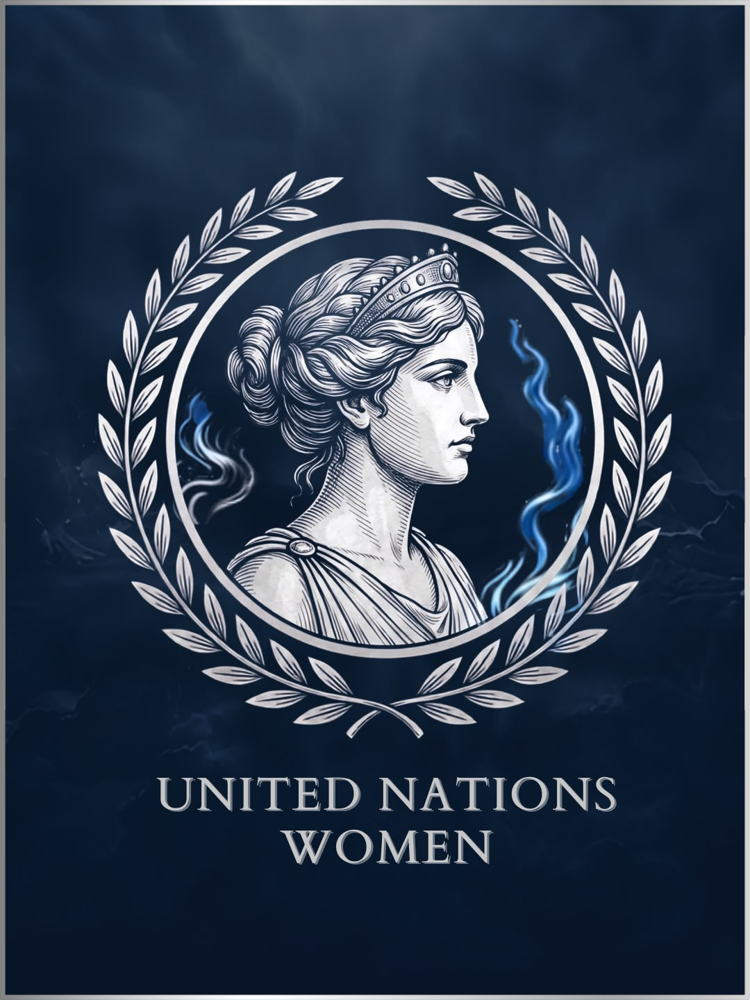
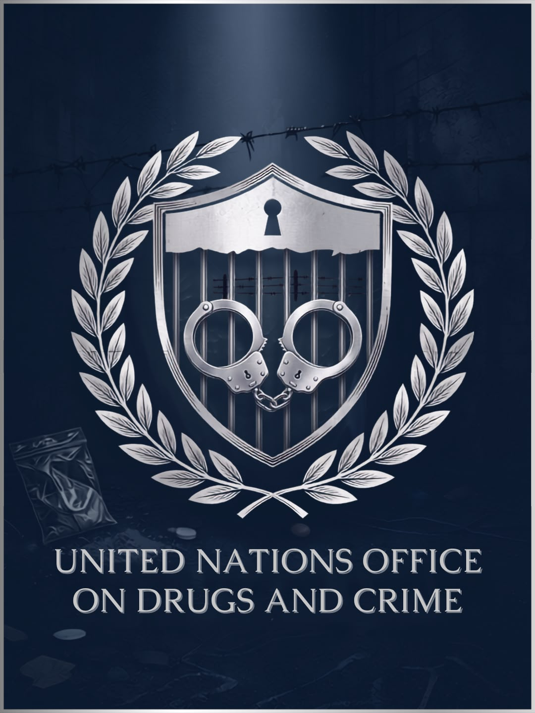

UMTMUN is the official Model United Nations conference hosted by the University of Management and Technology. It brings together passionate delegates from across the nation to debate pressing global issues, develop diplomatic skills, and foster youth leadership through dynamic committee sessions and cultural exchange.
The principal body responsible for maintaining international peace and security, empowered to take binding action on behalf of all UN member states.
An intergovernmental body tasked with strengthening the promotion and protection of human rights around the globe and addressing situations of human rights violations.

Dedicated to gender equality and the empowerment of women, UN Women works to eliminate discrimination and ensure women's full participation in society.

A deliberative body focused on disarmament issues, working toward multilateral agreements that reduce global arms proliferation and promote international stability.
The journalistic arm of the conference where delegates cover proceedings, produce live reports, and develop media skills in a fast-paced diplomatic environment.
A high-intensity committee where delegates respond to rapidly evolving scenarios, making critical decisions under pressure in real time.